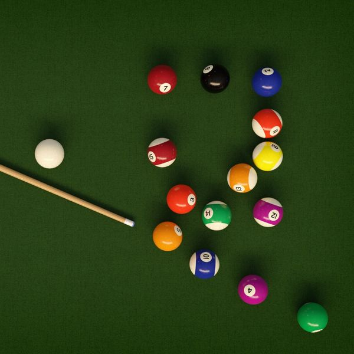

New to Billiards?
No worries, here is a crash course in the game:
Billiards 101
Billiards is a classic and engaging cue sport played worldwide. It requires skill, strategy, and precision. The game involves striking balls with a cue stick to pocket them in a designated order based on the game type.
Here are some common games you might enjoy:
- 8-Ball: One of the most popular billiards games, where players must pocket either solids or stripes before sinking the 8-ball.
- 9-Ball: A fast-paced game where players must hit the balls in numerical order, finishing with the 9-ball.
- 10-Ball: Similar to 9-ball but with ten balls and stricter rules on called shots.

Home | Contest Rules and Requirements